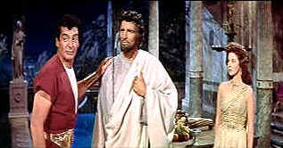

| Demetrius and
the Gladiators/B-,B+ |
| Fox/1954/102/ANA
2.55 |
Demetrius and the Gladiators is not a "guy group" from
hey day fifties rock and roll. It's the sequel to The Robe, the first Cinemascope
spectacular. Trying to capitalize on the new found glory of the wide screen, Demetrius takes
some of the sanctimoniously religious elements of The Robe and tries jazzing them up with
ferocious feline flourishes. Not every stroke of the gladiator's blade hits the mark, but Demetrius
and the Gladiators is an entertaining epic worthy of its wide screen lineage.
 |
| Demetrius glad hands Peter as Messalina looks on.
©Fox |
More action than religious epic, Demetrius and the Gladiators
emphasizes the battles int he arena and the bedroom more than the politics or religious issues.
Demetrius, a Christian witness to Christ's crucifixion, brings Jesus' fallen robe back to Rome.
When Caligula, Rome's mad Caesar learns of the robe's supposed miraculous powers, he wants it for
himself. Demetrius gets caught defending a fair lady in the robe hunt and is sentenced by a Roman
tribunal to train for gladiatorial combat. Happily, he gets sent to a gladiator school owned by
Claudius, Caligula's uncle. This means Demetrius gets singled out by Claudius' panting. plotting
sex kitten of a wife, Messalina. Demetrius may have found religion, but Messalina has a trick
or two up her chemise. Demetrius and the Gladiators delivers a main order of gladiators with
a side dish of sexual byplay. The religious aperitif is repeated for degustation.
One of the best things about Demetrius and the Gladiators are the
gladiatorial matches. These are not edited to death is chopped up snippets of film strips, but you
can actually see the huge effort it takes to survive. True, there's hardly enough blood. But
Demetrius' frenetic charging around after multiple combatants feels a lot more real than fights in
which each assailant politely awaits his turn at confrontation. And those tigers are pretty nasty,
even if they are de-clawed. No figment of a computer's awesome power either. The script tries
desperately to keep up with Franz Waxman's rousing score, but there aren't enough horns in the cast
to do the job. The violins are a little anemic as well.
There are some very hokey mistakes that leap off the screen as prominently as
any tiger ever did. With all the extras in Hollywood where did they ever assemble those new
recruits for the gladiator school? My God, a couple of those guys were probably getting letters
from the AARP. And who in Rome's name ever dreamed up the make-up and hairstyle for Debra Paget's
Lucia?
The acting is a mixed bag. Victor Mature has never been stiffer. Maybe he took
too big a dose of religious sanctimony along with him from The Robe. By the time he comes
back down to earth to star in Demetrius, he hardly even moves his head when delivering his
dialogue. Mature is not up to the sudden changes in Demetrius' character. The script doesn't help
much either. Susan Hayward is enormous fun as the scheming Messalina. I haven't seen so much heavy
breathing on screen since the last time I watched Marilyn Monroe enunciate her way through Some
Like it Hot. But, rest assured, Hayward is hot. Jay Robinson prances and prattles with
effective mad delivery as Caligula and Barry Jones is appropriately somber wearing the mantle of
Claudius. William Marshall makes Glydon an imposing figure and Ernest Borgnine cracks the whip with
authority as former gladiator turned trainer Strabo.
Demetrius and the Gladiators ripples its muscles on DVD. Fox
does a commendable job of making this early Cinemascope feature a treat for home theater audiences.
The widescreen images achieve maximum resolution without ugly edginess. Some detail is lost in the
long shots, but close-ups look fresh enough for big screen theatrical beauty. The resplendent
Technicolor© is gorgeous. Praetorian capes blaze red Roman glory. There is some color flashing at
scene changes and openings, but it minor and hardly intrusive. Some dirt and scratches sneak onto
the original elements, but they are minor. Overall, Demetrius is a DVD treat. The 4:0
Surround appears to preserve the directionality of the dialogue. Levels are inconsistent. Waxman's
score sounds grand with good stereo separation. Fox had included several foreign trailers for
Demetrius and the Gladiators providing some additional fun watching the advertising blurbs in
German, French and Spanish.
|
|
|
|

The
Movie Poster Archive includes extensive poster images from the films of stars like Susan Hayward,
Kirk Douglas, Katharine Hepburn and many more. Our featured star is Susan Hayward

Selections from the Feature Archive
include articles on Akira Kurosawa, Frank
Darabont, Blonde Bimbos, Hollywood Street Gangs, or Vietnam: The
Hollywood Pariah, and many more....
.jpg)
Screen Voices and style of delivery often stamp an actor's screen
image indelibly. Click the lips to read more.

The Adventures of Baron Munchhausen/A,A-

Director Terry Gilliam's richly detailed interpretation of the outlandishly
imagined and fabricated exploits of the legendary eighteenth-century German adventurer and
storyteller.

 Images is a
non-commercial Web site created for everyone who enjoys movies and popular culture. Images is
published quarterly; however, new reviews will appear each week, so check back often. Images is a
non-commercial Web site created for everyone who enjoys movies and popular culture. Images is
published quarterly; however, new reviews will appear each week, so check back often.

Home Vision Cinema
Classic and foreign motion pictures on VHS tape. The title
selection is excellent and informative essays are provided for many of the films.

Elegant DVD portal with news, reviews, links and information
galore.

An on-line Home Theater magazine with excellent hardware reviews,
including thorough and responsible research. Check it out.
|